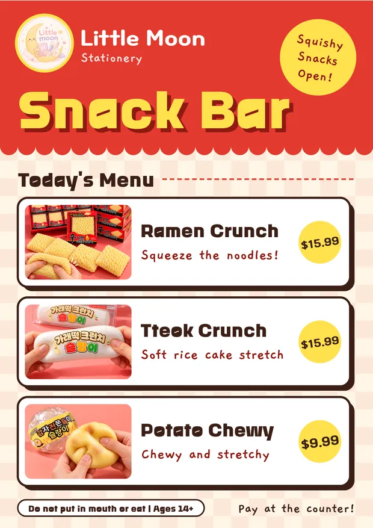
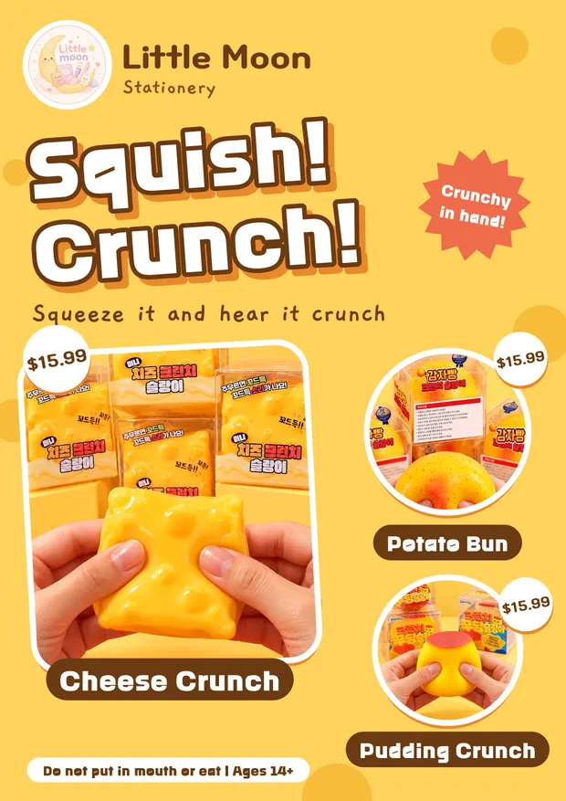
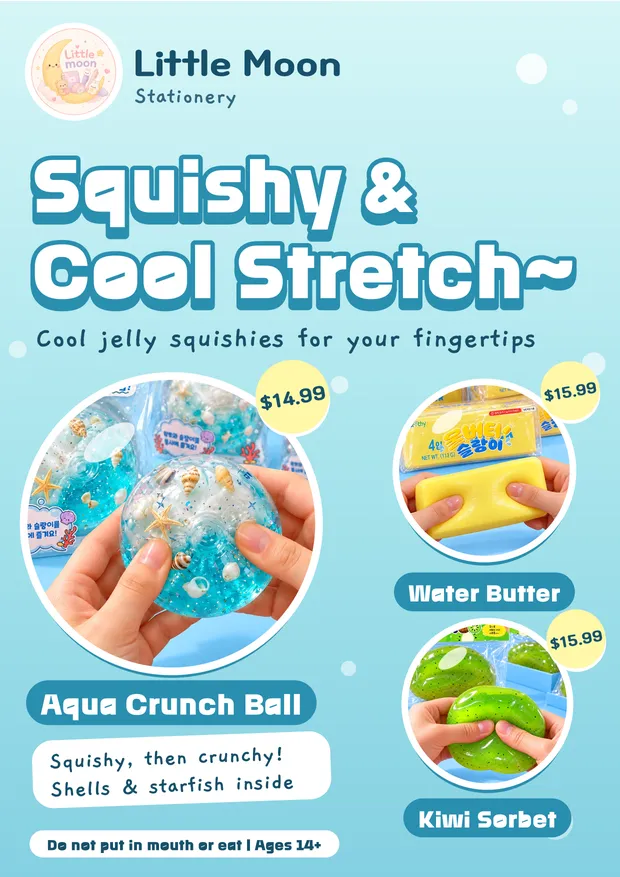
Little Moon Campaign
Three posters for a stationery shop’s squishy toy line: a red snack-bar menu, a yellow crunch poster and a sky-blue jelly poster, each in Korean and English.
From gameplay systems to functional mobile prototypes, I combine visual design and interactive technology to build experiences people can use.
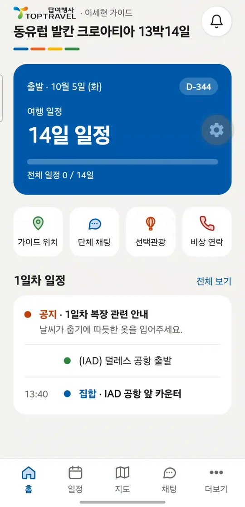
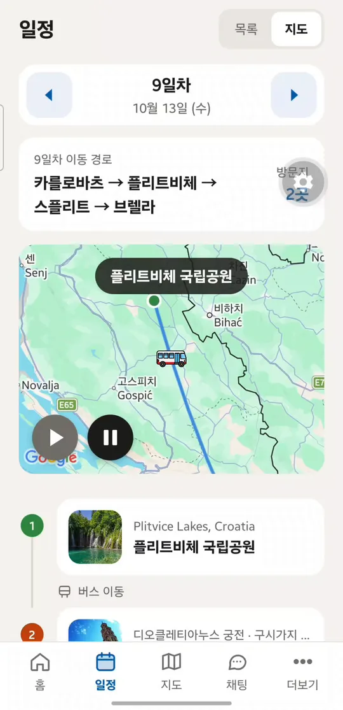
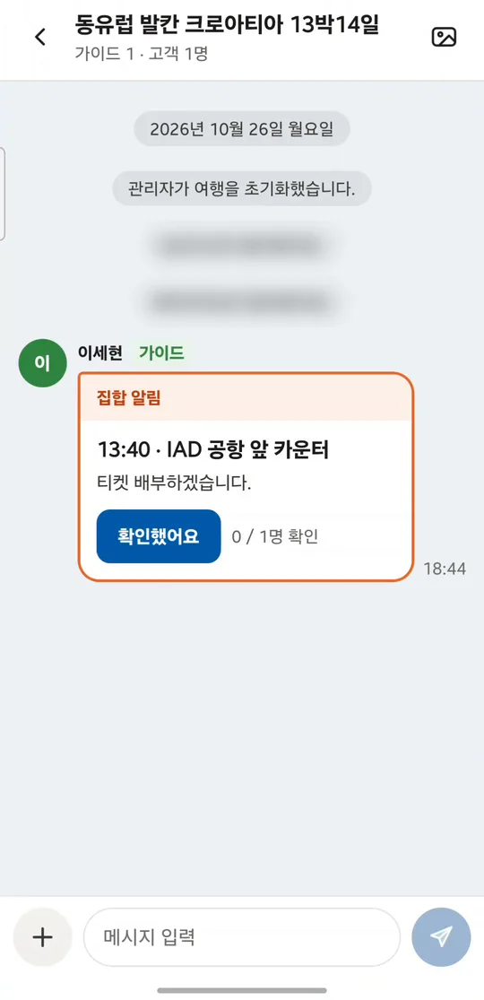
What I designed, what I built, and where each project stands today.
TopTrip is a functional mobile prototype designed to help group travelers and tour guides manage itineraries, meeting points, announcements, and attendance.
Read the case study


Three posters for a stationery shop’s squishy toy line: a red snack-bar menu, a yellow crunch poster and a sky-blue jelly poster, each in Korean and English.
Newspaper ads, itinerary sheets, social posts and route maps for a Korean-American travel agency. Places, dates and prices are checked before release. Select an image to see it full size.
Unity projects where I built the gameplay systems.
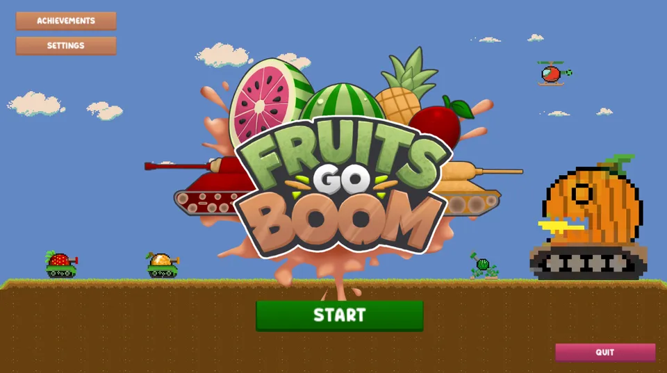
2025 · 2D platformer shooter
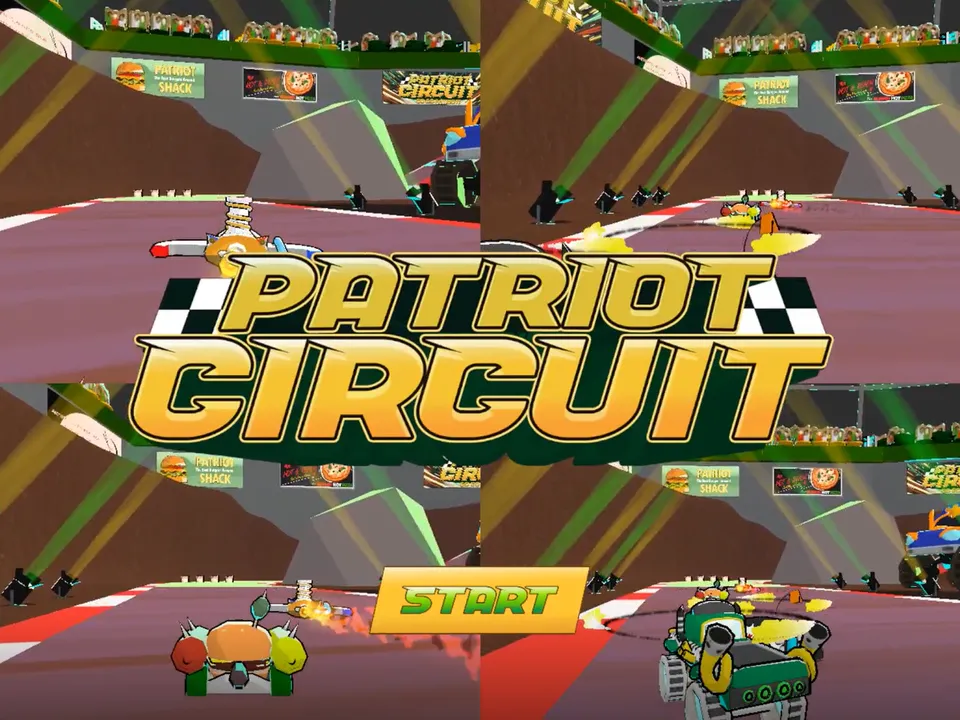
2025 · Kart racing
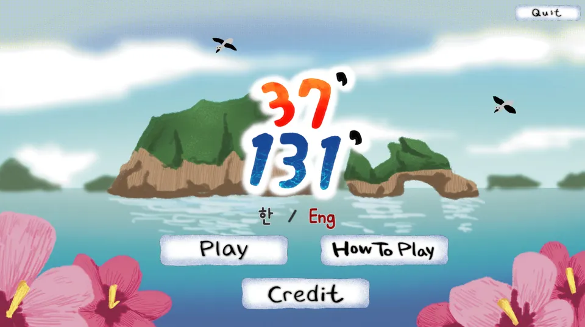
2024 · Educational puzzle about Dokdo
I began by building interactive gameplay systems in Unity. I later expanded into commercial visual design and functional prototypes for mobile experiences and workflow tools, bringing design and implementation together.
George Mason University — BFA, Computer Game Design
Gameplay systems in Unity, refined through playtests.
Campaigns, itineraries and maps for travel products.
Working prototypes that run on real devices.
Open to junior UI/UX, product design and interactive prototyping roles in Korea and the US.
TopTrip is a functional mobile prototype designed to help group travelers and tour guides manage itineraries, meeting points, announcements, and attendance.
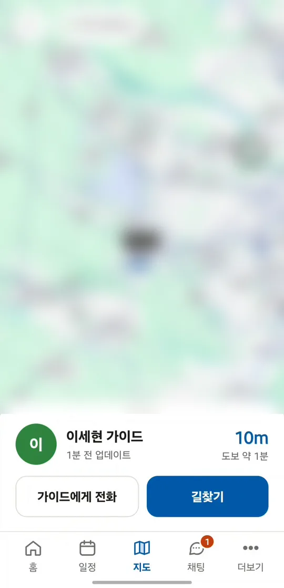
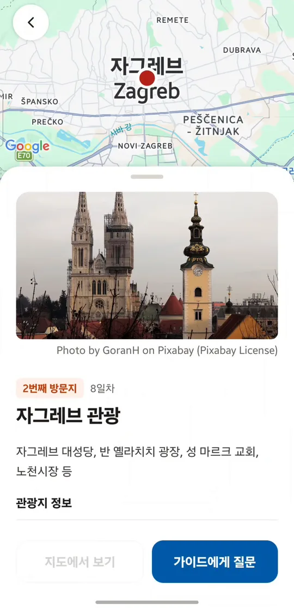
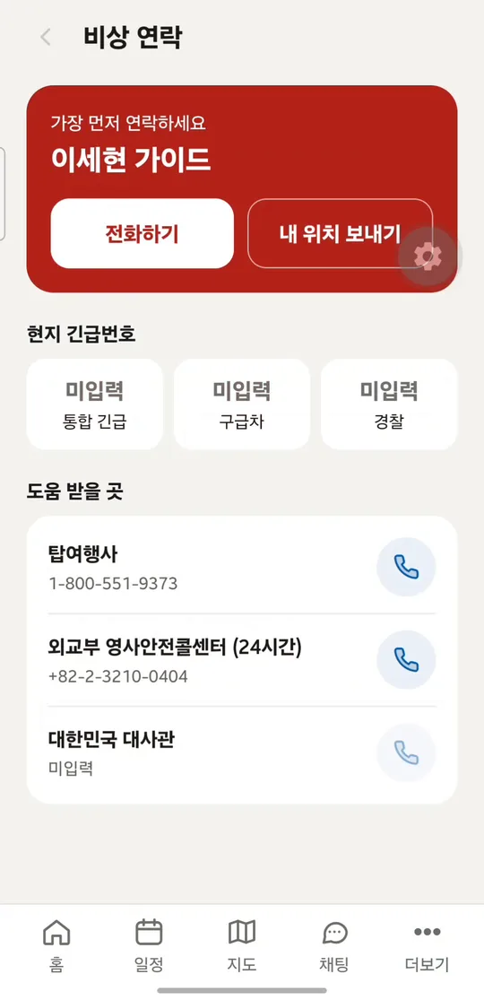
Everyone starts by joining with a trip code.
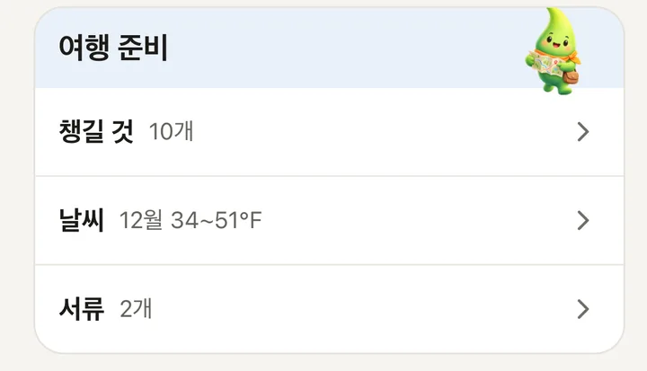
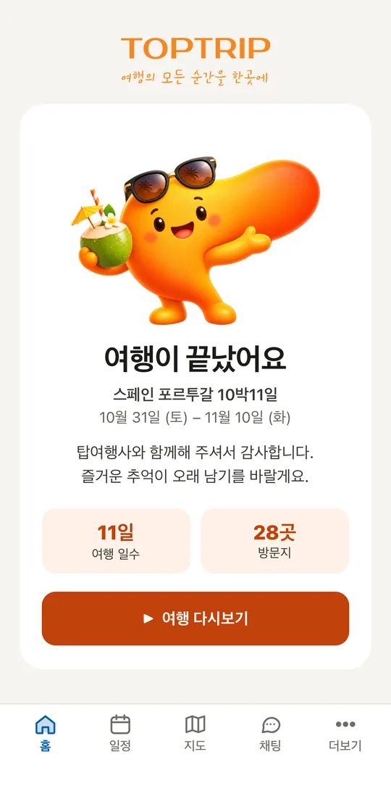
A 37-second cut from the Oct 26, 2026 device test. No sound, no autoplay.
Next: a 60–90 s edit with trip-code join and two devices syncing.
Defined requirements, made the design decisions, integrated the pieces, debugged and tested on real devices.
Drafting code from my specifications. I reviewed, adjusted and tested what it produced.
This is a working prototype that runs on real devices. It has not completed live customer operation or large-scale usability testing.